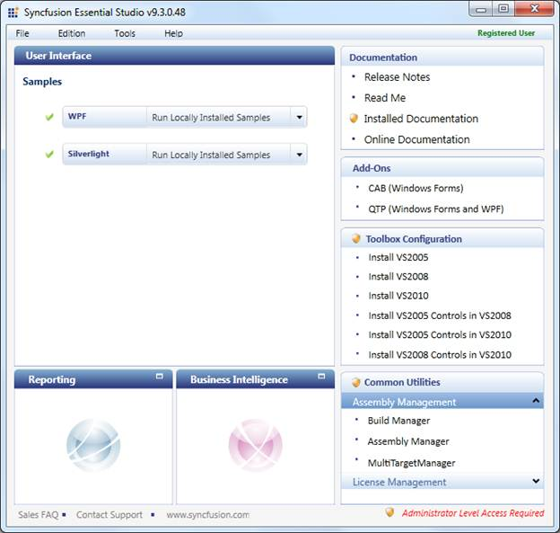
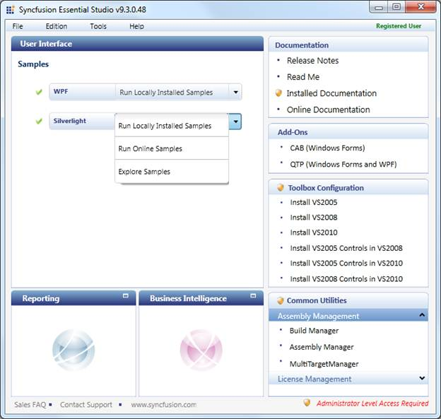
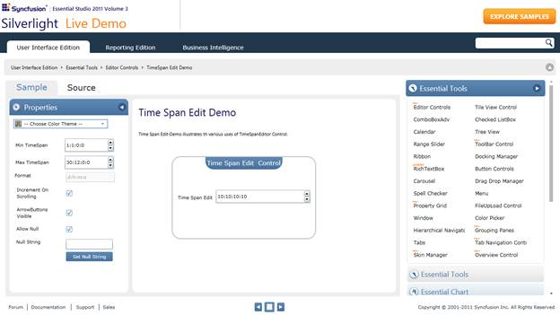

To view samples:
1. Click Start-->All Programs-->Syncfusion-->Essential Studio <x.x.x.x.> -->Dashboard.
The Essential Studio Enterprise Edition window is displayed.

Figure 299: Essential Studio Enterprise Edition Window
The User Interface edition panel is displayed by default.
2. Select Silverlight from the samples listed. The following options will be displayed. You can view the samples in the following three ways:
· Run Locally Installed Samples-View the locally installed Tools samples for Silverlight using the sample browser
· Run Online Samples-View the online samples for Silverlight
· Explore Samples-Locate the Silverlight samples on the disk

Figure 300: Silverlight samples listed in three ways
3. 3. Select Run Locally Installed Samples. The Silverlight Sample Browser displays.

Figure 301: Silverlight Sample Browser
4. On the right pane, go to Editor Controls ->Time Span Edit Demo.